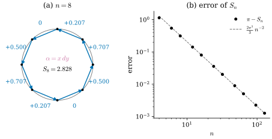
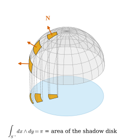

35.3 Integration of Differential Forms
Goals
- 평면 영역 위 2-form(일반적으로 \(\R^n\)의 영역 위 \(n\)-form)의 적분을 정의하고, change of variables에서 \(\abs{\det}\)가 아니라 \(\det\)가 나오는 이유를 orientation으로 설명할 수 있다.
- curve 위 1-form의 적분(line integral)과 parametrized \(k\)차원 조각 위 \(k\)-form의 적분을 정의하고, 적분이 parametrization에 무관하며 orientation을 뒤집으면 부호만 바뀜을 증명할 수 있다.
- sphere의 넓이 2-form, hemisphere 위의 \(dx\wedge dy\)(그림자 넓이), helix 위의 1-form 같은 running example을 적분할 수 있다.
- 상수 \(k\)-form을 oriented \(k\)-simplex 위에서 적분하면 \(\tfrac{1}{k!}\,\omega(x_1 - x_0, \dots, x_k - x_0)\)임을 증명할 수 있다.
Prerequisites
- Definition 35.1.1, Proposition 35.1.10, Example 35.1.11, Proposition 35.2.2
- Definition 2.6.6 (domain of integration and volume), Theorem 2.6.7 (Fubini's theorem), Proposition 2.6.8, Theorem 2.6.9 (change of variables formula)
- (34.4.3), Proposition 34.1.6, Definition 4.3.2 (orientation-preserving reparametrization), Example 7.3.10
Motivation
Section 35.2에서 form을 미분했다. 미적분학의 다른 절반은 적분이다. 넓이를 구할 때는 영역을 작은 조각으로 나누어 조각의 넓이 \(A_i\)를 더하고, 조각을 작게 하는 극한을 취한다. 함수 \(f\)의 적분은 각 조각의 넓이에 그 조각의 \(f\) 값을 곱해 더한 것이다 [CMU-DDG L7].
form의 언어로 보면 이 과정에는 이미 2-form이 들어 있다. 조각이 vector \(u_i, v_i\)로 펼쳐지는 작은 평행사변형이면, 그 넓이는 \((dx\wedge dy)(u_i, v_i)\)이고 \(f\)로 가중한 넓이는 \(\omega_{p_i}(u_i, v_i)\), \(\omega = f\,dx\wedge dy\)이다. 이렇게 보면 적분 기호 안의 \(f\,dx\,dy\)는 2-form \(f\,dx\wedge dy\)로 읽을 수 있고, 합 \(\sum_i\omega_{p_i}(u_i, v_i)\)가 그 Riemann sum이다. 이 관점의 장점은 두 가지다. 첫째, 평행사변형을 \((v_i, u_i)\) 순서로 놓으면 값의 부호가 바뀌므로 orientation이 적분에 자연스럽게 들어온다. 둘째, 조각이 \(\R^3\) 안의 surface 조각이어도 같은 식이 그대로 쓰인다. 이 절은 이것을 정확히 한다.
Integrating \(n\)-Forms over Regions of \(\R^n\)
\(\R^n\)의 open set 위의 \(n\)-form은 모두 \(\omega = f\,dx^1\wedge\cdots\wedge dx^n\) 꼴이다(Section 35.1). 이 장에서 “영역”은 Definition 2.6.6의 domain of integration, 곧 boundary의 부피가 \(0\)인 bounded set이다.
Definition 35.3.1 (integral of an \(n\)-form over a region). \(D \subseteq \R^n\)이 domain of integration이고 \(\omega = f\,dx^1\wedge\cdots\wedge dx^n\)이 \(\overline D\)를 포함하는 open set 위의 continuous \(n\)-form이라 하자. \(D\)에 standard orientation을 줄 때
로 정하고(오른쪽은 Definition 2.6.6의 Riemann integral), 반대 orientation을 준 \(D\)(이것을 \(-D\)로 쓴다)에서는 \(\int_{-D}\omega := -\int_D f\)로 정한다.
이것이 form의 integration(적분)의 가장 단순한 경우다. 정본 정의는 Section 18.3에 있다. \(n = 2\)이면 \(\int_D f\,dx\wedge dy = \iint_D f\,dx\,dy\)(standard orientation)이다. 오른쪽의 \(dx\,dy\)는 순서가 없는 넓이 측도이고, 왼쪽의 \(dx\wedge dy\)는 순서가 있는 2-form이라 \(\int_D f\,dy\wedge dx = -\iint_D f\,dx\,dy\)이다. orientation이 들어간다는 것은 다음 명제에서 드러난다.
Proposition 35.3.2 (change of variables for top-degree forms). \(W, U \subseteq \R^n\)이 open set이고 \(P\colon W \to U\)가 \(C^1\) diffeomorphism, \(D\)가 \(\overline D \subseteq W\)인 domain of integration, \(\omega = f\,dx^1\wedge\cdots\wedge dx^n\)이 \(U\) 위의 continuous \(n\)-form이라 하자. \(\det DP\)가 \(W\)에서 양수이면
이고, \(\det DP\)가 \(W\)에서 음수이면 가운데와 오른쪽 식에 \(-\)를 붙인다(\(P(D)\)에는 standard orientation을 준다).
이 명제가 말하는 것. form을 새 변수로 옮기면 그 coefficient에 \(\det DP\)가 곱해진다(Proposition 35.1.10). 절댓값이 아니라 부호 있는 determinant다. Riemann 적분의 change of variables Theorem 2.6.9에서는 \(\abs{\det DP}\)였다. 두 식의 차이가 정확히 orientation이고, orientation을 보존하는 좌표에서는 둘이 같다.
Proof. determinant formula (34.4.3)에서 \((dx^1\wedge\cdots\wedge dx^n)(v_1, \dots, v_n)\) \(= \det[dx^i(v_j)]\) \(= \det[v_1\ \cdots\ v_n]\)이므로 \(\omega_{P(u)}(\partial_1P, \dots, \partial_nP) = f(P(u))\det DP(u)\)이다. Theorem 2.6.9(a)에서 \(\int_{P(D)} f = \int_D (f\circ P)\abs{\det DP}\)이고, \(\abs{\det DP} = \pm\det DP\)이다.
Example 35.3.3 (2-forms on plane regions). (a) unit square \(Q = [0, 1]^2\)에서 \(\int_Q 6xy^2\,dx\wedge dy\) \(= \int_0^1\!\int_0^1 6xy^2\,dx\,dy\) \(= 3\cdot\tfrac13 = 1\)이고(Fubini, Theorem 2.6.7), 같은 form을 \(-Q\)에서 적분하거나 \(6xy^2\,dy\wedge dx\)를 \(Q\)에서 적분하면 \(-1\)이다.
(b) unit disk \(B\)에서 \(\omega = (x^2 + y^2)\,dx\wedge dy\)를 polar coordinates \(P(r, \theta)\)(\(\det DP = r \gt 0\))로 적분하자. (35.3.2)에서 integrand는 \(r^2\cdot r\)이고
\[ \int_B (x^2 + y^2)\,dx\wedge dy = \int_0^{2\pi}\!\!\int_0^1 r^3\,dr\,d\theta = 2\pi\cdot\frac14 = \frac{\pi}{2} \]
이다. polar coordinates는 slit을 빼야 diffeomorphism이지만, 빠진 반직선은 넓이가 \(0\)이라 결과에 영향이 없다(Example 2.6.10에서 극한으로 정당화한 것과 같다). 같은 계산으로 \(\int_B dx\wedge dy = \pi\)이다. 이것은 (35.1.6)의 \(dx\wedge dy = r\,dr\wedge d\theta\)를 적분 기호 안에서 쓴 것이다.
Verification: verify/v-35-3-integration.py
Line Integrals
곡선 위에서는 조각이 작은 선분이고, 1-form으로 잰다. 시각 \(t\)에서 \(t + \Delta t\)까지 곡선은 대략 vector \(\gamma'(t)\,\Delta t\)만큼 움직이고, 그 움직임을 \(\alpha\)로 잰 값은 \(\alpha_{\gamma(t)}(\gamma'(t))\,\Delta t\)이다.
Definition 35.3.4 (line integral of a 1-form). \(\gamma\colon [a, b] \to U\)가 \(C^1\)(\([a, b]\)를 포함하는 open interval 위의 \(C^1\) map의 제한)이고 \(\alpha\)가 \(U\) 위의 continuous 1-form이면
라 한다. \(\gamma\)가 piecewise \(C^1\)이면 조각마다의 적분을 더한다.
이것이 line integral(선적분)이다(정본은 Section 16.3, Tour는 Section 0.7). \(\alpha = \sum_i\alpha_i\,dx^i\)이면 integrand는 \(\sum_i\alpha_i(\gamma(t))\,(\gamma^i)'(t)\)이고, vector field \(X\)로 \(\alpha = X^\flat\)이면 \(\inner{X(\gamma(t))}{\gamma'(t)}\), 곧 \(X\)가 곡선을 따라 한 일이다. 정의에 \(\abs{\gamma'}\)가 없으므로 inner product가 필요 없다. 정의의 동기였던 Riemann sum은 실제로 이 적분으로 수렴한다.
Proposition 35.3.5 (Riemann sums of a line integral). Definition 35.3.4의 상황에서 \(\gamma\)가 \(C^1\)이라 하자. 모든 \(\varepsilon \gt 0\)에 대하여 \(\delta \gt 0\)이 있어, 간격이 모두 \(\delta\)보다 작은 분할 \(a = t_0 \lt t_1 \lt \cdots \lt t_N = b\)마다
\[ \Big|\sum_{i=0}^{N-1}\alpha_{\gamma(t_i)}\big(\gamma(t_{i+1}) - \gamma(t_i)\big) - \int_\gamma\alpha\Big| \lt \varepsilon \]
이다.
Proof. 성분마다 미적분학의 기본정리를 쓰면 \(\gamma(t_{i+1}) - \gamma(t_i) = \int_{t_i}^{t_{i+1}}\gamma'(t)\,dt\)이고, \(\alpha_{\gamma(t_i)}\)는 linear이므로 합은 \(\sum_i\int_{t_i}^{t_{i+1}}\alpha_{\gamma(t_i)}(\gamma'(t))\,dt\)이다. \(G(s, t) := \alpha_{\gamma(s)}(\gamma'(t)) = \sum_j\alpha_j(\gamma(s))\,(\gamma^j)'(t)\)는 compact set \([a, b]^2\)에서 continuous이므로 uniformly continuous다(Corollary 3.6.19). \(\abs{s - t} \lt \delta\)이면 \(\abs{G(s, t) - G(t, t)} \lt \varepsilon/(b - a)\)인 \(\delta\)를 잡으면, \(t \in [t_i, t_{i+1}]\)에서 \(\abs{t_i - t} \lt \delta\)이므로 차이는 \(\sum_i\int_{t_i}^{t_{i+1}}\abs{G(t_i, t) - G(t, t)}\,dt \lt \varepsilon\)이다.
Example 35.3.6 (line integrals).
- (a) unit circle \(\gamma(t) = (\cos t, \sin t)\), \(t \in [0, 2\pi]\)(반시계 방향) 위에서 \(\alpha = x\,dy\)는 \(\alpha_{\gamma(t)}(\gamma'(t)) = \cos t\cdot\cos t\)이므로 \(\int_\gamma x\,dy = \int_0^{2\pi}\cos^2t\,dt = \pi\)이다(Example 0.7.2). 시계 방향 \(\bar\gamma(t) = (\cos t, -\sin t)\)이면 \(\cos t\cdot(-\cos t)\)를 적분해 \(-\pi\)이다.
- (b) 같은 \(\gamma\) 위에서 \(d\theta = (-y\,dx + x\,dy)/(x^2 + y^2)\)는 \(\big((-\sin t)(-\sin t) + \cos t\cos t\big)/1 = 1\)이므로 \(\int_\gamma d\theta = 2\pi\)이다.
- (c) helix \(\gamma(t) = (a\cos t, a\sin t, bt)\), \(t \in [0, 2\pi]\)(Chapter 5의 running example, \(a = 1\), \(b = 0.3\)) 위에서 \(\alpha = -y\,dx + x\,dy + z\,dz\)를 적분하자. \(\gamma' = (-a\sin t, a\cos t, b)\)이므로 \(\alpha_{\gamma(t)}(\gamma'(t))\) \(= a^2\sin^2t + a^2\cos^2t + bt\cdot b\) \(= a^2 + b^2t\)이고 \[ \begin{aligned} \int_\gamma\alpha &= \int_0^{2\pi}(a^2 + b^2t)\,dt = 2\pi a^2 + 2\pi^2b^2 \\ &= 2\pi + 0.18\,\pi^2 = 8.0597\ldots \end{aligned} \] 이다. 첫째 항은 \(z\)축 둘레를 도는 몫이고, 둘째 항은 \(z\,dz\)의 몫으로 끝점의 높이 \(z = 2\pi b\)에만 의존한다(\(z\,dz = d(z^2/2)\), Section 35.4의 fundamental theorem).
Verification: verify/v-35-3-integration.py
Non-example 35.3.7 (arc length is not the integral of a 1-form). 곡선의 길이 \(\int_a^b\abs{\gamma'(t)}\,dt\)는 어떤 1-form \(\alpha\)의 \(\int_\gamma\alpha\)도 아니다. 1-form의 적분은 곡선의 방향을 뒤집으면 부호가 바뀌는데(아래 Proposition 35.3.9), 길이는 그대로이기 때문이다. 길이를 재려면 \(\abs{\cdot}\), 곧 inner product가 필요하다. 1-form이 재는 것은 방향이 있는 “진행량”이다.
Figure 35.3.1은 Proposition 35.3.5를 Example 35.3.6(a)에서 본 것이다. 왼쪽 (a)를 보자. 회색 원 위에 같은 간격의 점 \(8\)개(검은 점)를 찍고, 파란 화살표로 이웃한 점을 잇는 vector \(p_{i+1} - p_i\)를 그렸다. 화살표 바깥의 파란 숫자가 그 vector를 출발점의 covector \(\alpha_{p_i} = x_i\,e^2\)로 잰 값 \(x_i(y_{i+1} - y_i)\)이다. 맨 위의 점 \((0, 1)\)과 맨 아래의 점 \((0, -1)\)에서 출발하는 두 화살표는 \(0\)이다. 화살표가 기울어 있어도 출발점의 \(x\)좌표가 \(0\)이라 covector \(\alpha_{p_i} = x_i\,e^2\) 자체가 \(0\)이기 때문이다. 가장 큰 값 \(0.707\)은 \((1, 0)\)에서 위로 출발하는 화살표와 \((-1, 0)\)에서 아래로 출발하는 화살표가 낸다. 둘 다 \(\abs{x_i} = 1\)이고 \(y\) 방향 변화가 가장 크며, \(x_i\)와 \(y_{i+1} - y_i\)의 부호가 같다. 여덟 값의 합이 \(S_8 = 2.828\)로 \(\pi = 3.142\)에 가깝다. 오른쪽 (b)는 \(n\)을 늘릴 때 오차 \(\pi - S_n\)을 log-log 축에 그린 것이고, 회색 점선 \(\tfrac{2\pi^3}{3}n^{-2}\)과 겹친다. 실제로 \(S_n = \tfrac{n}{2}\sin\tfrac{2\pi}{n}\)이고, 이것은 원에 내접한 정 \(n\)각형의 넓이와 같다. 그 이유는 Section 35.4의 Stokes's theorem이 설명한다.

Integrating \(k\)-Forms over Parametrized Patches
두 정의는 한 정의의 특수한 경우다. \(k\)차원 parameter 영역의 작은 상자 \([t, t + \Delta t]\)가 parametrization \(\varphi\)를 거치면 대략 vector \(\partial_1\varphi\,\Delta t^1, \dots, \partial_k\varphi\,\Delta t^k\)가 펼치는 평행육면체가 되고, \(k\)-form은 그것을 잰다.
Definition 35.3.8 (integral over a parametrized patch). \(D \subseteq \R^k\)가 domain of integration이고, \(\varphi\)가 \(\overline D\)를 포함하는 open set에서 \(U \subseteq \R^n\)으로 가는 \(C^1\) map이며, \(\omega\)가 \(U\) 위의 continuous \(k\)-form이라 하자(\(1 \le k \le n\)).
를 parametrized patch \(\varphi\) 위의 \(\omega\)의 적분이라 한다. integrand와 \(dt^1\wedge\cdots\wedge dt^k\)의 곱을 \(\varphi^*\omega\)로 쓰면 \(\int_\varphi\omega = \int_D\varphi^*\omega\)(Definition 35.3.1)이다.
\(k = 1\)이면 line integral (35.3.3)이고, \(k = n\)이고 \(\varphi = P\)가 orientation을 보존하는 diffeomorphism이면 (35.3.2)에 의해 \(\int_{P(D)}\omega\)와 같다. \(\varphi^*\omega\)는 pullback(당김, Section 16.2)의 가장 단순한 경우로, 여기서는 parameter 공간의 top-degree form에만 이 기호를 쓴다. 적분값이 parametrization을 고르는 방식에 의존하지 않아야 이 정의가 쓸모 있다.
Proposition 35.3.9 (independence of the parametrization). Definition 35.3.8의 상황에서 \(h\colon W' \to W\)가 \(\R^k\)의 open set 사이의 \(C^1\) diffeomorphism이고, \(D'\)이 \(\overline{D'} \subseteq W'\)인 domain of integration이며 \(h(D') = D\), \(\overline D \subseteq W\)이고 \(\varphi\)가 \(W\)에서 정의되었다고 하자. \(\det Dh \gt 0\)이 \(W'\) 전체에서 성립하면 \(\int_{\varphi\circ h}\omega = \int_\varphi\omega\)이고, \(\det Dh \lt 0\)이 \(W'\) 전체에서 성립하면 \(\int_{\varphi\circ h}\omega = -\int_\varphi\omega\)이다.
이 명제가 말하는 것. 적분은 parameter를 바꾸어도 같고, orientation을 뒤집는 parameter 변환에서만 부호가 바뀐다. 그래서 \(\det Dh \gt 0\)인 \(h\)로 이어지는 parametrization들을 같은 orientation으로 보고, orientation이 정해진 \(k\)차원 조각 위의 적분을 말할 수 있다. \(k = 1\)이면 \(\det Dh = h'\)이므로 orientation-preserving reparametrization(Definition 4.3.2)은 line integral을 바꾸지 않고, reversed curve는 부호를 바꾼다. Example 35.3.6(a)의 \(\pm\pi\)가 그 예다.
Proof idea: chain rule에서 새 partial derivative vector는 옛 vector들의 \(Dh\)-조합이고, alternating multilinear인 \(\omega\)는 그 조합에서 \(\det Dh\)를 뱉는다. 나머지는 Riemann 적분의 change of variables다.
Proof. chain rule(Theorem 2.2.1)에서 \(\partial_j(\varphi\circ h)(s) = \sum_i \partial_jh^i(s)\,\partial_i\varphi(h(s))\)이다. \(\omega_p\)는 alternating multilinear이므로 Proposition 34.4.7에 의해 \(\omega_p(w_1, \dots, w_k) = \omega_p(w_1\wedge\cdots\wedge w_k)\)이고, Proposition 34.1.6(a)에서 \[ \begin{aligned} & \partial_1(\varphi\circ h)\wedge\cdots\wedge\partial_k(\varphi\circ h) \\ &\quad = \det Dh(s)\;\partial_1\varphi\wedge\cdots\wedge\partial_k\varphi\,\big|_{h(s)} \end{aligned} \] 이다. 따라서 \(\int_{\varphi\circ h}\omega\)의 integrand는 \(G(h(s))\det Dh(s)\)이다. 여기서 \(G(t) = \omega_{\varphi(t)}(\partial_1\varphi, \dots, \partial_k\varphi)\)는 \(\int_\varphi\omega\)의 integrand다. Theorem 2.6.9(a)를 \(h\)에 쓰면 \(\int_{D'}(G\circ h)\abs{\det Dh} = \int_D G\)이고, \(\abs{\det Dh} = \pm\det Dh\)이다.
\(\R^3\)의 surface 조각 \(\mathbf{x}\colon D \to \R^3\)(parameter \((u, v)\)) 위의 2-form은 Example 35.1.11의 사전으로 vector field의 flux가 된다. \(\omega = \star w^\flat\)이면 \(\omega(\mathbf{x}_u, \mathbf{x}_v) = \inner{w}{\mathbf{x}_u\times\mathbf{x}_v}\)이므로
이다. 곧 orientation \(\mathbf{x}_u\times\mathbf{x}_v\) 쪽으로 \(w\)가 surface를 지나는 양이다.
Example 35.3.10 (two 2-forms on the sphere). sphere \(S^2(r)\)의 standard parametrization \(\mathbf{x}(\theta, \varphi) = (r\sin\theta\cos\varphi, r\sin\theta\sin\varphi, r\cos\theta)\)(Example 7.1.2)를 \(D = [0, \pi]\times[0, 2\pi]\) 위에서 쓰자. \(\mathbf{x}_\theta\times\mathbf{x}_\varphi = r^2\sin\theta\,\mathbf{N}\)이고 \(\mathbf{N} = \mathbf{x}/r\)은 바깥쪽이다(Example 7.5.2). parametrization이 \(\theta = 0, \pi\)에서 regular가 아니고 반원 하나를 두 번 덮지만, 그 부분은 넓이가 \(0\)이라 적분에 영향이 없다(Example 7.3.10과 같은 처리).
(a) (area 2-form) \(\R^3 \setminus \{0\}\)의 2-form \(\sigma := \star\mathbf{N}^\flat\), \(\mathbf{N}(p) = p/\abs{p}\)를 쓰자. 성분으로는 \(\sigma = (x\,dy\wedge dz + y\,dz\wedge dx + z\,dx\wedge dy)/\abs{p}\)이다. (35.3.5)에서 integrand는 \(\inner{\mathbf{N}}{r^2\sin\theta\,\mathbf{N}} = r^2\sin\theta\)이고
\[ \int_{S^2(r)}\sigma = \int_0^{2\pi}\!\!\int_0^{\pi} r^2\sin\theta\,d\theta\,d\varphi = 4\pi r^2 \]
이다. sphere의 넓이(Example 7.3.10)와 같다. parameter 영역에서 본 integrand \(r^2\sin\theta\,d\theta\wedge d\varphi\)는 Example 34.5.8에서 구한 tangent plane의 \(\star 1\)과 같다. surface의 넓이를 넓이 form의 적분으로 보는 것은 Chapter 18의 주제다(Section 18.5).
(b) (shadow) 2-form \(dx\wedge dy\)는 평행사변형의 \(xy\)평면 그림자의 signed area를 잰다(Example 34.4.10(a)). \((dx\wedge dy)(\mathbf{x}_\theta, \mathbf{x}_\varphi)\) \(= (r\cos\theta\cos\varphi)(r\sin\theta\cos\varphi)\) \(- (r\cos\theta\sin\varphi)(-r\sin\theta\sin\varphi)\) \(= r^2\sin\theta\cos\theta\)이므로, upper hemisphere \(S^+\)(\(0 \le \theta \le \pi/2\))에서
\[ \begin{aligned} \int_{S^+}dx\wedge dy &= \int_0^{2\pi}\!\!\int_0^{\pi/2} r^2\sin\theta\cos\theta\,d\theta\,d\varphi \\ &= 2\pi r^2\cdot\frac12 = \pi r^2 \end{aligned} \]
이다. hemisphere의 그림자인 disk의 넓이다. 전체 sphere에서는 \(\int_0^\pi\sin\theta\cos\theta\,d\theta = 0\)이므로 \(0\)이다. 아래 hemisphere의 그림자가 반대 부호로 같은 disk를 덮기 때문이다.
Verification: verify/v-35-3-integration.py
Figure 35.3.2로 (b)를 보자. 회색 hemisphere에 \(\theta, \varphi\) 격자가 있고, 주황으로 칠한 세 칸은 같은 \(\varphi\) 구간에서 극 근처, 중간, 적도 근처에 있는 칸이다. 주홍 화살표는 칸 중심의 바깥쪽 \(\mathbf{N}\)이고, 회색 점선은 칸의 모서리를 아래의 하늘색 평면으로 수직으로 내린 선이다. 평면 위의 주황 조각이 각 칸의 그림자다. 칸 위의 \(dx\wedge dy\)의 적분은 그 그림자의 넓이다. sphere 위의 넓이는 극 쪽부터 \(0.052\), \(0.108\), \(0.136\)으로 적도 쪽 칸이 가장 크지만, 그림자 넓이는 \(0.048\), \(0.065\), \(0.018\)로 적도 근처 칸이 가장 납작하다. 적도에서는 \(\mathbf{N}\)이 수평이라 칸이 \(xy\)평면에 거의 수직이기 때문이다. 모든 칸의 그림자를 모으면 하늘색 disk 전체가 되고, 그 넓이가 \(\pi\)이다.

Animation 35.3.1은 “모든 칸을 더하면 \(\pi\)”를 실제로 더해 본다. 극에서 적도 쪽으로 \(\theta\)-띠를 하나씩 주황으로 칠하고, 그 띠의 그림자인 annulus를 아래 disk에 채운다. 오른쪽 막대에서 회색(띠의 넓이)과 주황(그림자, 곧 그 띠 위의 \(\int dx\wedge dy\))을 비교하자. 회색은 적도로 갈수록 커지지만 주황은 가운데에서 가장 크고 적도 쪽에서 다시 작아진다. 적도 근처의 띠는 넓어도 거의 서 있어서 그림자가 가늘기 때문이다. 마지막 띠를 더하면 주황 annulus들이 disk를 빈틈없이 채우고, 합이 \(\pi\)가 된다.
Constant Forms on Simplices
mesh 위의 계산은 모두 simplex 위의 적분이다. \(k\)-simplex를 parametrization하는 표준 방법은 standard simplex \[ \Delta^k := \{t \in \R^k : t^i \ge 0,\ t^1 + \cdots + t^k \le 1\} \] 에서 affine map으로 보내는 것이다. 먼저 \(\Delta^k\)의 부피가 필요하다.
Lemma 35.3.11 (volume of the standard simplex). \(\Delta^k\)는 domain of integration이고 \(\vol(\Delta^k) = 1/k!\)이다.
Proof. \(\Delta^k\)의 boundary는 \(k + 1\)개의 hyperplane 조각에 들어 있으므로 부피가 \(0\)이다. \(k = 1\)이면 \(\Delta^1 = [0, 1]\)이라 길이 \(1\)이다. \(k \ge 2\)이면 Fubini(Theorem 2.6.7)로 마지막 좌표 \(t^k = s\)에서 자르자. 단면은 \(\{(t^1, \dots, t^{k-1}) : t^i \ge 0,\ \sum t^i \le 1 - s\}\) \(= (1 - s)\Delta^{k-1}\)이고, Proposition 2.6.8에 의해 그 부피는 \((1 - s)^{k-1}\vol(\Delta^{k-1})\)이다. 따라서 \(\vol(\Delta^k)\) \(= \vol(\Delta^{k-1})\int_0^1(1 - s)^{k-1}\,ds\) \(= \vol(\Delta^{k-1})/k\)이고, 귀납법으로 \(1/k!\)이다.
affinely independent한 점 \(x_0, \dots, x_k \in \R^n\)(Definition 33.1.1)에 대하여
는 \(\Delta^k\)를 simplex \(\{x_0, \dots, x_k\}\) 위로 보낸다. vertex를 \((x_0, \dots, x_k)\) 순서로 늘어놓은 oriented simplex \(\sigma = [x_0, \dots, x_k]\)(Definition 33.3.2) 위의 적분을 \(\int_\sigma\omega := \int_{\varphi_\sigma}\omega\)로 정한다. tools/dgdec.py의 derham1과 derham2는 정확히 이 parametrization을 쓰고 integrand를 quadrature로 적분한다.
Proposition 35.3.12 (constant forms on simplices). \(\sigma = [x_0, \dots, x_k]\)가 \(\R^n\)의 oriented \(k\)-simplex라 하자(\(1 \le k \le n\)).
- (a) 상수 \(k\)-form \(\omega\)(coefficient가 상수)에 대하여
\[ \int_\sigma\omega = \frac{1}{k!}\,\omega(x_1 - x_0, \dots, x_k - x_0) \tag{35.3.7} \]이다.
- (b) \(\{0, \dots, k\}\)의 permutation \(\pi\)에 대하여 \(F(x_0, \dots, x_k)\) \(:= \omega(x_1 - x_0, \dots, x_k - x_0)\)는 \(F(x_{\pi(0)}, \dots, x_{\pi(k)})\) \(= \sgn\pi\;F(x_0, \dots, x_k)\)를 만족한다.
- (c) 모든 continuous \(k\)-form \(\omega\)에 대하여, vertex의 순서를 even permutation으로 바꾸어도 \(\int_\sigma\omega\)는 같고 odd permutation으로 바꾸면 부호가 바뀐다. 즉 적분은 oriented simplex에만 의존한다.
이 명제가 말하는 것. 상수 form은 simplex의 edge vector들을 재고, simplex가 그 vector들이 만드는 parallelepiped의 \(1/k!\)이므로 \(1/k!\)이 붙는다. 이 \(1/k!\)은 wedge product의 정규화가 아니라 기하다(Section 34.4의 Conventions 상자). \(k = 1\)이면 \(\int_{[x_0, x_1]}\omega = \omega(x_1 - x_0)\)이다.
Proof. (a) \(\partial_i\varphi_\sigma = x_i - x_0\)는 상수이므로 (35.3.4)의 integrand는 상수 \(\omega(x_1 - x_0, \dots, x_k - x_0)\)이고, 적분은 그것에 \(\vol(\Delta^k) = 1/k!\)(Lemma 35.3.11)을 곱한 것이다.
(b) transposition이 permutation 전체를 만들므로 transposition에서 부호가 바뀜을 보이면 된다. \(a_i := x_i - x_0\)로 쓰자. \(i, j \ge 1\)인 \(x_i\)와 \(x_j\)를 맞바꾸면 \(\omega\)의 두 인자가 바뀌므로 부호가 바뀐다. \(x_0\)과 \(x_1\)을 맞바꾸면 \[ \begin{aligned} F(x_1, x_0, x_2, \dots) &= \omega(x_0 - x_1, x_2 - x_1, \dots, x_k - x_1) \\ &= \omega(-a_1, a_2 - a_1, \dots, a_k - a_1) \end{aligned} \] 이다. 둘째 이후 인자의 \(-a_1\)은 첫 인자와 평행하므로 multilinearity와 alternating 성질로 지울 수 있어 \(\omega(-a_1, a_2, \dots, a_k) = -F(x_0, x_1, \dots)\)이다. \(x_0\)과 \(x_j\)(\(j \ge 2\))의 맞바꿈은 \((1\,j)(0\,1)(1\,j)\)이므로 세 번의 부호 변화로 \(-1\)이다. (Proposition 33.3.4는 \(\omega = \det\)인 경우다.)
(c) 순서를 \(\pi\)로 바꾼 parametrization을 \(\varphi_{\sigma\pi}\)라 하자. barycentric coordinates를 permute하는 affine bijection \(h\colon \Delta^k \to \Delta^k\)(\(\R^k\) 전체의 affine diffeomorphism으로 넓어진다)가 있어 \(\varphi_{\sigma\pi} = \varphi_\sigma\circ h\)이다. Proposition 35.3.9의 증명에서 integrand는 \(\det Dh\)배가 된다. 상수 form \(\omega\)로 \(\omega(x_1 - x_0, \dots) \neq 0\)인 것(예: Proposition 35.1.6의 \(dx^I\) 중 하나)을 넣고 (b)와 비교하면 상수 \(\det Dh\)는 \(\sgn\pi\)이다. 따라서 Proposition 35.3.9가 결론을 준다.
Example 35.3.13 (simplex integrals). (a) Figure 34.4.2의 triangle \(\sigma = [(0, 0), (2, 0.5), (0.6, 1.6)]\)에서 \(\int_\sigma dx\wedge dy\) \(= \tfrac12\det\begin{pmatrix} 2 & 0.6 \\ 0.5 & 1.6\end{pmatrix}\) \(= \tfrac12(3.2 - 0.3) = 1.45\)이고, 그 edge \([(0, 0), (2, 0.5)]\)에서 \(\int(dx + dy) = 2.5\)이다. Chapter 34의 Smooth vs. Discrete 상자가 미뤄 둔 공식 \(\tfrac{1}{k!}\omega(x_1 - x_0, \dots)\)의 증명이 Proposition 35.3.12다.
(b) \(\R^3\)의 triangle \(\sigma = [x_0, x_1, x_2]\), \(x_0 = (1, 0, 0)\), \(x_1 = (0, 2, 0)\), \(x_2 = (0, 0, 1)\)과 상수 2-form \(\star w^\flat\), \(w = (1, 1, 1)\)을 보자. \((x_1 - x_0)\times(x_2 - x_0)\) \(= (-1, 2, 0)\times(-1, 0, 1)\) \(= (2, 1, 2)\)이므로 (35.3.7)에서 \(\int_\sigma\star w^\flat = \tfrac12\inner{w}{(2, 1, 2)} = 2.5\)이다. 상수 vector field \(w\)가 triangle을 normal \((2, 1, 2)\) 쪽으로 지나는 flux다. 같은 triangle에서 \(dx\wedge dy\)는 \(xy\)평면 그림자 \(\{(1, 0), (0, 2), (0, 0)\}\)의 signed area \(\tfrac12\cdot 2 = 1\)을 낸다.
(c) 상수가 아닌 form은 공식이 아니라 적분이다. edge \([(0, 0), (1, 1)]\) 위의 \(x\,dy\)는 \(\varphi(t) = (t, t)\)에서 \(\int_0^1 t\,dt = \tfrac12\)이고, 이 값은 시작점에서 잰 값 \(0\cdot 1 = 0\)과도, 끝점에서 잰 값 \(1\cdot 1 = 1\)과도 다르다.
Verification: verify/v-35-3-integration.py
Section 35.4의 Stokes's theorem은 차원이 하나 낮은 boundary 위의 적분을 쓴다. 1차원 영역(curve)의 boundary는 점이므로, 점 위의 “적분”도 정해 둔다.
Remark 35.3.14 (integration over oriented points, a convention). 0-form(함수) \(f\)를 oriented point \(\pm[x]\)(Definition 33.3.2)에서 적분한 값을 \(\int_{+[x]}f := f(x)\), \(\int_{-[x]}f := -f(x)\)로 정하고, 여러 점의 형식적 합에서는 더한다. 예를 들어 \(\int_{[b] - [a]}f = f(b) - f(a)\)이다.
점 위의 적분은 함수값을 부호와 함께 읽는 것일 뿐이다. 그래서 Chapter 36의 de Rham map은 0-form을 vertex 값의 배열로 보낸다.
Summary
- \(\R^n\)의 영역 위 \(n\)-form \(f\,dx^1\wedge\cdots\wedge dx^n\)의 적분은 \(\int f\)이고 orientation을 뒤집으면 부호가 바뀐다. 변수를 바꾸면 \(\det DP\)(절댓값 없이)가 곱해진다(Definition 35.3.1, Proposition 35.3.2).
- line integral \(\int_\gamma\alpha = \int\alpha_{\gamma(t)}(\gamma'(t))\,dt\)는 작은 화살표를 1-form으로 잰 값의 합의 극한이다(Definition 35.3.4, Proposition 35.3.5). 길이와 달리 inner product가 필요 없고 방향이 있다.
- parametrized \(k\)차원 조각 위의 적분 (35.3.4)은 parametrization에 무관하고 orientation을 뒤집으면 부호만 바뀐다(Proposition 35.3.9). \(\R^3\)에서 2-form \(\star w^\flat\)의 적분은 flux이고, sphere의 area 2-form은 \(4\pi r^2\), upper hemisphere 위의 \(dx\wedge dy\)는 그림자 넓이 \(\pi r^2\)을 준다(Example 35.3.10).
- 상수 \(k\)-form을 oriented \(k\)-simplex 위에서 적분하면 \(\tfrac{1}{k!}\omega(x_1 - x_0, \dots, x_k - x_0)\)이고, 적분은 oriented simplex에만 의존한다(Proposition 35.3.12). 점 위의 적분은 부호 있는 함수값이다(Remark 35.3.14).
다음 절에서는 미분과 적분을 잇는다. 영역 안에서 \(d\alpha\)를 적분한 값이 boundary 위에서 \(\alpha\)를 적분한 값과 같다는 Stokes's theorem을 boundary의 orientation과 함께 진술하고, box와 simplex에서 증명한 뒤, Green, divergence, classical Stokes theorem과 \(d\circ d = 0\)의 이유를 그것으로 설명한다.
Exercises
Exercise 35.3.1 ★ ellipse \(\gamma(t) = (2\cos t, \sin t)\), \(t \in [0, 2\pi]\) 위에서 \(\alpha = \tfrac12(x\,dy - y\,dx)\)를 적분하여라. 시작점을 \(t = \pi\)로 옮긴 parametrization \(\gamma(t + \pi)\)와, \(\gamma(-t)\)에서는 값이 어떻게 되는가?
Solution
\(\gamma' = (-2\sin t, \cos t)\)이므로 \(\alpha_{\gamma(t)}(\gamma'(t))\) \(= \tfrac12\big(2\cos t\cdot\cos t - \sin t\cdot(-2\sin t)\big)\) \(= 1\)이고 적분은 \(2\pi\)이다. \(\gamma(t + \pi)\)는 \(h(t) = t + \pi\)(\(h' = 1 \gt 0\))로 같은 closed curve를 같은 방향으로 돌므로 integrand가 같은 \(1\)이라 \(2\pi\)이다. \(\gamma(-t)\)는 \(h' = -1\)이므로 \(-2\pi\)이다(Proposition 35.3.9). \(2\pi\)는 ellipse가 둘러싼 넓이 \(\pi\cdot 2\cdot 1\)과 같은데, 그 이유는 Section 35.4에서 본다.
Exercise 35.3.2 ★ 참인지 거짓인지 판별하고 이유를 써라. (a) \(\int_\gamma\alpha\)는 \(\gamma\)의 속력에 의존한다. (b) parametrized surface 위 2-form의 적분은 \(\mathbf{x}(u, v)\)를 \(\mathbf{x}(v, u)\)로 바꾸면 부호가 바뀐다. (c) \(\int_{-[x]}f = -f(x)\)이다. (d) 상수 2-form을 triangle 위에서 적분한 값은 vertex의 순서를 cyclic하게 바꾸어도 같다.
Solution
(a) 거짓. orientation-preserving reparametrization에 무관하다(Proposition 35.3.9, \(k = 1\)). (b) 참. \(h(s, t) = (t, s)\)는 \(\det Dh = -1\)이다. (c) 참. Remark 35.3.14의 규약이다. (d) 참. cyclic permutation \((0\,1\,2) \mapsto (1\,2\,0)\)은 transposition 두 개라 even이다(Proposition 35.3.12(b)).
Exercise 35.3.3 ★★ 반지름 \(r\)인 cylinder \(\mathbf{x}(u, v) = (r\cos u, r\sin u, v)\), \(0 \le u \le 2\pi\), \(0 \le v \le 1\)(\(\mathbf{x}_u\times\mathbf{x}_v\)는 바깥쪽, Example 7.5.2)에서 (a) \(\star w^\flat\), \(w = (x, y, 0)\)의 적분과 (b) \(dx\wedge dy\)의 적분을 구하고, 각각의 값을 flux와 그림자로 설명하여라.
Solution
\(\mathbf{x}_u = (-r\sin u, r\cos u, 0)\), \(\mathbf{x}_v = (0, 0, 1)\), \(\mathbf{x}_u\times\mathbf{x}_v = (r\cos u, r\sin u, 0)\)이다. (a) (35.3.5)의 integrand는 \(\inner{(r\cos u, r\sin u, 0)}{(r\cos u, r\sin u, 0)}\) \(= r^2\)이므로 적분은 \(2\pi r^2\)이다. \(w\)는 바깥쪽으로 크기 \(r\)인 field이고 옆넓이가 \(2\pi r\)이다. (b) \((dx\wedge dy)(\mathbf{x}_u, \mathbf{x}_v)\) \(= (-r\sin u)\cdot 0 - (r\cos u)\cdot 0\) \(= 0\)이므로 \(0\)이다. cylinder의 옆면은 \(xy\)평면에 수직이라 그림자의 넓이가 \(0\)이다.
Exercise 35.3.4 ★★★ Lemma 35.3.11을 다른 방법으로 증명하여라. unit cube \([0, 1]^k\)이 \(k!\)개의 집합 \(C_\pi = \{t : 0 \le t^{\pi(1)} \le t^{\pi(2)} \le \cdots \le t^{\pi(k)} \le 1\}\)(\(\pi\)는 \(\{1, \dots, k\}\)의 permutation)로 나뉘고, 각 \(C_\pi\)가 \(\Delta^k\)의 affine image로서 부피가 같음을 보여라.
Hint
\(C_{\id}\)에서 \(s^1 = t^1\), \(s^i = t^i - t^{i-1}\)(\(i \ge 2\))로 두면 \(s^i \ge 0\)이고 \(\sum s^i = t^k \le 1\)이다.
Solution
모든 \(t \in [0, 1]^k\)는 성분을 정렬하는 permutation이 있으므로 어떤 \(C_\pi\)에 속하고, 두 \(C_\pi\)의 교집합은 두 성분이 같은 hyperplane 조각에 들어 있어 부피가 \(0\)이다. 좌표의 permutation은 부피를 보존하므로(Proposition 2.6.8, \(\abs{\det} = 1\)) 모든 \(C_\pi\)의 부피는 \(C_{\id}\)의 부피와 같다. 힌트의 linear map \(t \mapsto s\)는 \(C_{\id}\)를 \(\Delta^k\) 위로 보내는 bijection이고, 행렬이 대각 성분 \(1\)인 lower triangular라 determinant가 \(1\)이다. 따라서 \(\vol(C_{\id}) = \vol(\Delta^k)\)이고 \(k!\,\vol(\Delta^k) = \vol([0, 1]^k) = 1\)이다.
Exercise 35.3.5 ★
Coding. tools/dgdec.py의 derham1, derham2로 (a) Example 35.3.13(b)의 triangle 위 상수 2-form \(\star w^\flat\)의 적분 \(2.5\)와 그 세 edge 위 상수 1-form \(dx + 2\,dz\)의 적분을 (35.3.7)과 비교하고, (b) 같은 triangle 위의 다항식 2-form \(\star w^\flat\), \(w = (yz, x^2, xy)\)의 적분을 Implementation 상자의 integrate_patch(parametrization (35.3.6), parameter 영역을 \([0, 1]^2\) 위로 당긴 \(\varphi(s, u) = x_0 + s(x_1 - x_0) + s u(x_2 - x_1)\))와 비교하여라.
Hint
\((s, u) \mapsto (t^1, t^2) = (s(1 - u), su)\)는 \((0, 1)^2\)을 \(\Delta^2\)의 interior로 보내고 \(\det = s \gt 0\)이다.
Solution
import dgdec as dd
V = np.array([[1.0, 0, 0], [0, 2.0, 0], [0, 0, 1.0]])
F = np.array([[0, 1, 2]])
E = np.array([[0, 1], [1, 2], [2, 0]])
flux_const = dd.derham2(lambda p: np.array([1.0, 1.0, 1.0]), V, F)[0]
edges = dd.derham1(lambda p: np.array([1.0, 0.0, 2.0]), V, E)
formula = [np.array([1.0, 0, 2.0]) @ (V[j] - V[i]) for i, j in E]
w = lambda p: np.array([p[1] * p[2], p[0] ** 2, p[0] * p[1]])
tri = lambda t: V[0] + t[0] * (V[1] - V[0]) + t[0] * t[1] * (V[2] - V[1])
dtri = lambda t: np.stack([V[1] - V[0] + t[1] * (V[2] - V[1]), t[0] * (V[2] - V[1])], 1)
flux_patch = integrate_patch(lambda p, a, b: w(p) @ np.cross(a, b), tri, dtri, [(0, 1), (0, 1)])
flux_dd = dd.derham2(w, V, F)[0]
print(round(flux_const, 12), np.round(edges, 12), np.allclose(edges, formula), np.isclose(flux_patch, flux_dd))
2.5 [-1. 2. -1.] True True(a) derham2는 \(\tfrac12\inner{w}{(2, 1, 2)} = 2.5\)를 낸다. edge 값은 \(k = 1\)인 (35.3.7), 곧 \((dx + 2\,dz)(x_j - x_i)\)이다: \(x_1 - x_0 = (-1, 2, 0)\)에서 \(-1\), \(x_2 - x_1 = (0, -2, 1)\)에서 \(2\), \(x_0 - x_2 = (1, 0, -1)\)에서 \(-1\)이다. 세 값의 합은 \(0\)이다. 닫힌 edge loop의 edge vector 합이 \(0\)이기 때문이다(Figure 34.4.2와 같은 현상). (b) 다항식 2-form에서 integrate_patch와 derham2(quadrature가 total degree \(6\)까지 정확)가 같은 값을 낸다. 두 계산의 parametrization은 다르지만 둘 다 orientation \([x_0, x_1, x_2]\)를 주므로 Proposition 35.3.9에 의해 같아야 한다. 출력은 2.5 [-1. 2. -1.] True True이다.